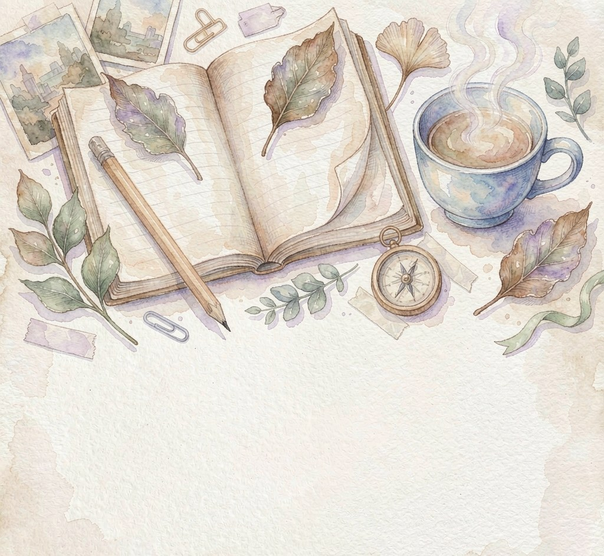
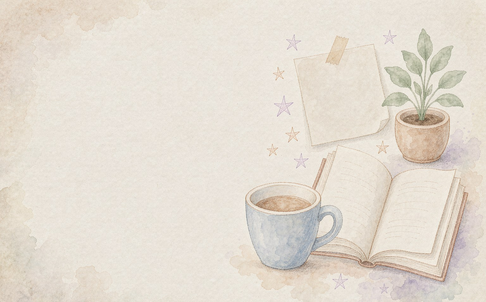

且将新火试新茶， 诗酒趁年华。
a personal journal of curiosity, making & wandering 这里不是一个标签清单，更像一本随手翻开的手记——记录我怎么认识世界、把好奇变成行动，以及期待与怎样的人同行。
从这里出发，慢慢认识自己
不急着把自己说成某一种人。先从一些真实的片段开始。
我是武川。比起过早确定答案，我更想保留一点好奇心，继续去看、去做、去认识不同的人。
更多时候，我是一个仍在路上的人——有时会花时间研究一个新工具，有时突然想做一个产品，有时又会被历史、城市、人与人的故事吸引。
我喜欢把看起来不太相关的东西连接起来。也愿意花时间理解一个问题，再想办法把它变成某种看得见、摸得着的东西。
我也珍惜人与人之间真诚的连接。喜欢坦诚表达，也享受和一群人一起把一件事做成的过程。比起过早把自己定义成某一种人，我更愿意保留一点好奇心，继续去看、去做、去认识不同的人。
在亲手试一试的路上。 ✎

总想知道事情为什么如此。
一个念头，最好能变成真实的东西。
喜欢真诚交流，也享受一起完成事情。
去不同的地方，看看世界的不同样子。
把一个念头，慢慢做成形状
像一本设计年鉴，几件作品大小错落地陈列。看见哪一件有意思，就推门走进去看看。
与人同行，也在事情里长出方法
有些能力不是坐下来想明白的，是在一次次真实任务里，边做边调整，慢慢长出来的。点开任何一条，看看它背后的故事。
走过一些地方，也收集一些瞬间
一条路，串起几座城市。每一站，都留了一点光和当时的心情。

日子向前，兴致未减
我想让生活里一直有新的东西发生。
去没去过的地方，认识不一样的人，
也把脑海里那些奇怪又有趣的念头，试着做出来。
最近仍然在读、在看、在尝试。关于未来，还不想太早写成一个确定的句子。先把眼前的日子过好，也给下一次出发留一点空白。
写给自己：别急着下结论，先出发。 ✎
若有同路，欢迎相逢
如果你也在做一些有意思的事情，
或者刚好有一个想法，想找人一起试试，
可以从 AI 与创造、历史与人性、科技与金融、
旅行与城市，或生活里那些没试过的新鲜事聊起。
读到这里，盖个章吧
轻轻点一下那枚章，留个来过的印。
已盖 0 次 · 初来乍到